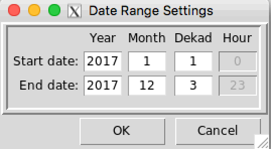
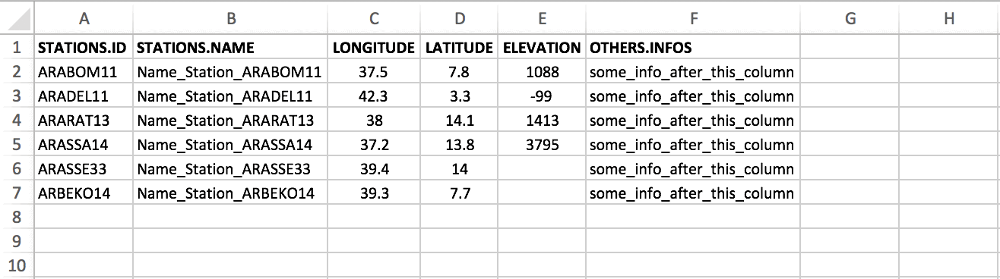
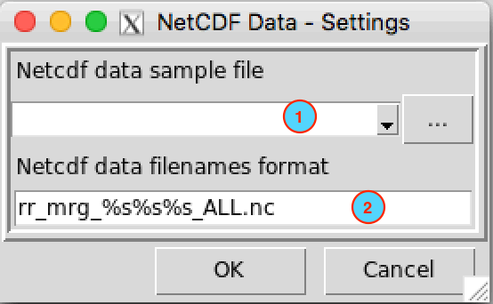
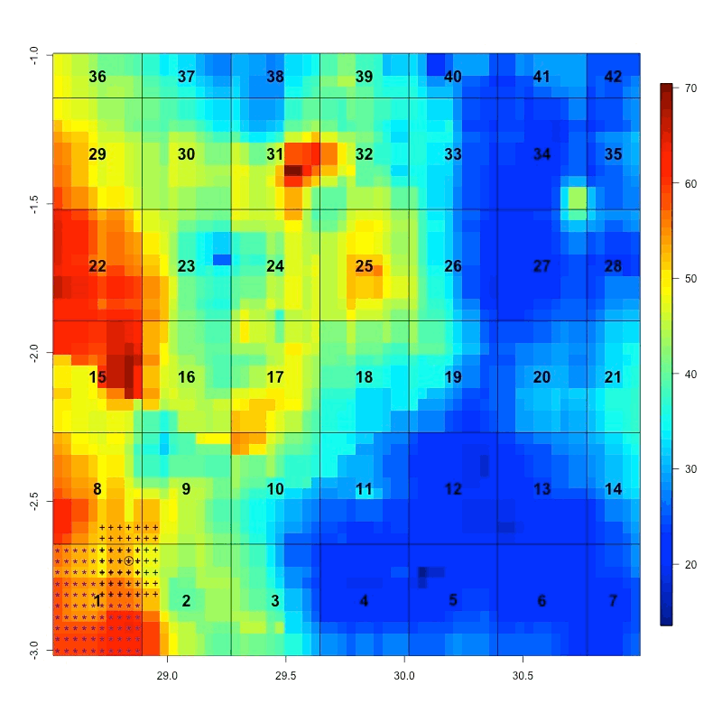

CDT can handle hourly, daily, pentad (5-days), dekadal (10-days) or monthly series. A file can contains one station or several stations series. Each input stations data should be stored in a text/ASCII or CSV (Comma-separated values) format file.
All the series from different stations for one variable are put together on a single file. It is the standard input data format used by CDT, in which the first line is the ID or name of the stations (avoid putting space in stations name), the second and third lines are longitude and latitude of the stations, and the fourth line is elevation data in meter (if it exists), and the following lines contain the observations, and the first column is the date of observations. The following tables show the format of the data
| STATIONS | ARARAT13 | ARDAGA13 | ARGUNN13 | ARHURU13 | ARKULU11 | AROGOL13 | ARROBE21 | BAHUNT21 | KFASSE13 |
| LON | 39.05944 | 38.8375 | 39.88333 | 39.3422 | 39.1553 | 39.0182 | 39.6221 | 39.4 | 37.21667 |
| DAILY/LAT | 7.982778 | 7.4337 | 8.36667 | 8.142 | 8.0097 | 8.0398 | 7.8757 | 7.05 | 7.75 |
| 20080625 | 15.7 | 5 | 9.3 | 7.3 | 0 | -99 | 5.6 | 6.5 | 23.1 |
| 20080626 | 6.3 | 6 | 3.2 | 1.3 | 0.4 | -99 | 2.6 | 0 | 2.3 |
| 20080627 | 0 | 0.6 | 0 | 0 | -99 | -99 | 0 | 0 | 0 |
| 20080628 | 0 | 1.2 | 0 | 0 | -99 | -99 | 0 | 0 | 0 |
| 20080629 | 0 | 0 | 0 | 0 | -99 | -99 | 0 | 1.6 | 12.3 |
| 20080630 | 13.8 | 3.8 | 1.3 | 0 | -99 | -99 | 11 | 13.2 | 3.6 |
| 20080701 | 0 | 7.3 | 0 | 3.2 | 0 | 5.8 | 3.6 | 1.2 | 0.3 |
| STATIONS | Abejorral | Ábrego | Abriaqui | Acacias | Acevedo | Agrado | Aguadas | Aguazul | Aipe |
| LON | -75.43000 | -73.23000 | -76.07000 | -73.77000 | -75.88000 | -75.71667 | -75.60000 | -72.55000 | -75.50000 |
| LAT | 5.783333 | 8.083333 | 6.633333 | 3.983333 | 1.833333 | 2.333333 | 5.733333 | 5.183333 | 3.266667 |
| DAILY/ELEV | 2180 | 1430 | 1920 | 525 | 1235 | 1725 | 560 | 380 | 1085 |
| 20050601 | 0.0 | 2.3 | 0.0 | 24.0 | 0.0 | 0.0 | -99 | -99 | 0.0 |
| 20050602 | 0 | 0 | 4 | 2 | 2 | 0 | -99 | -99 | 0 |
| 20050603 | 0 | 0 | 19 | 18 | 0 | 0 | -99 | -99 | 0 |
| 20050604 | 10.0 | 5.1 | 17.0 | 11.0 | 20.0 | 6.0 | -99 | -99 | 1.0 |
| 20050605 | 9.0 | 2.8 | 18.0 | 58.0 | 60.0 | 7.0 | -99 | -99 | 2.9 |
| 20050606 | 39.0 | 4.4 | 38.0 | 41.0 | 3.0 | 0.0 | -99 | -99 | 0.0 |
Missing values
CDT use “-99” to flag missing values in the data series and “-9999” for anomalies data. You can use your own missing values flag (the missing values code you provided must be exactly the same as used in the data; for example, “-99.” and “-99.0” are different; you can not use “-99.” when “-99.0” is used in the input data series; it will produce some odd results).
Date format
Date format must be grouped.
Hourly series :
YYYYMMDDHH, YYYY is the year, MM the months (the month values must have two digits 01 - 12), DD the days (the day values must have two digits 01 - 31), HH the hours (the hour of day must be in range 00 - 23).
Daily series :YYYYMMDD, YYYY: year, MM: month and DD: day.
Pentad series :YYYYMMP, YYYY: year, MM: month and P: pentad. There are 6 pentads in a calendar month. The pentad must be 1, 2, 3, 4, 5 or 6; pentad 1 (contains the days from the 1st to 5th), pentad 2 (6th to 10th), pentad 3 (11th to 15th), pentad 4 (16th to 20th), pentad 5 (21st to 25th) and pentad 6 (26th to the end of the month).
Dekadal series :YYYYMMDYYYY: year, MM: month and D: dekad. There are 3 dekads in a calendar month. The dekad must be 1, 2 or 3; dekad 1 (contains the days from the 1st to 10th), dekad 2 (11th to 20th) and dekad 3 (21st to the end of the month).
Monthly series :YYYYMM, YYYY: year and MM: month.
When you perform an operation or a temporal analysis, a date range or time range is required. You can set a date range parameter by clicking on a button located on the dialog box or the left panel command. A dialog box will be displayed allows you to specify the start and end date of the period to be considered.

Note
The date must be real, for example, if you enter 2015-06-31 or 2015-02-29, this will cause an error.
Sometimes CDT ask for the coordinates of the stations if it not included in the file containing the data, i.e., the coordinates are stored in a separate file.
CDT has a specific format to store the coordinates, in which the first column contains the ID or name of the stations (avoid putting space), the second column is for the long name of the stations, the third and fourth are longitude and latitude of the stations, the fifth column contains the elevation data in meter, and the following columns can contain any information about the stations.
You can edit the coordinates file on Excel spreadsheet and save it as a Comma Separated Values (CSV) file. It is useful for working on empty cells. If you edit the coordinates on Excel spreadsheet, you can leave blank the cells with missing values or fill it with missing values flag.

The columns 1 to 5 must be present in the coordinates file and the order must be respected. The column containing the ID or name of the stations must be complete, this column shall not contain blank or missing values. The columns containing longitude and latitude of the stations shall not contain blank if you edit the coordinates file on Excel spreadsheet, you have to fill the blank with missing value code. You can leave blank the columns containing the long name and the elevation if they are not available.
You can add a header to this file, and specify it when you import the data to CDT.
NetCDF files contain one or more variables, which are usually structured as regular multi-dimensional arrays. CDT can handle 2D (lat/lon) NetCDF data with several variables, in other words data for each date should be stored in a separate file, a file may contain only data for one hour, day, pentad, dekad or month. For example, if we have a dekadal rainfall series, then the data for each dekad should be stored in a separate file as follows :
rfe2014_01-dk1
rfe2014_01-dk2
rfe2014_01-dk3
rfe2014_02-dk1
rfe2014_02-dk2
......The format of the filenames is arbitrary. To read and write NetCDF file, CDT use the ncdf4 package.
Any time you open a NetCDF file, you will be asked to provide a sample file and select the target variable and the order of the coordinates (lat-lon or lon-lat).
The following examples show the order of the dimensions.
## Elevation/bathymetry, longitude (X) goes first then latitude (Y)
require(ncdf4)
nc <- nc_open('../R_Data/DEM_2_Arc-Minute.nc')
nc## File ../R_Data/DEM_2_Arc-Minute.nc (NC_FORMAT_CLASSIC):
##
## 1 variables (excluding dimension variables):
## float z[X,Y]
## actual_range: -10791
## actual_range: 8440
## missing_value: NaN
## units: m
## long_name: elevation/bathymetry
##
## 2 dimensions:
## X Size:302
## pointwidth: 0.0333333276212215
## gridtype: 0
## units: degree_east
## Y Size:424
## pointwidth: 0.0333333313465118
## gridtype: 0
## units: degree_north## TAMSAT dekadal precipitation, latitude (lat) goes first then longitude (lon)
## Note that there is a 3rd dimension time, but it only has one value for this dekad.
nc <- nc_open('../R_Data/rfe2014_01-dk3.nc')
nc## File ../R_Data/rfe2014_01-dk3.nc (NC_FORMAT_CLASSIC):
##
## 1 variables (excluding dimension variables):
## short rfe[lon,lat,time]
## units: mm
## long_name: Rain Fall Estimate
## short_name: rfe
## _FillValue: -99
##
## 3 dimensions:
## lat Size:1974
## long_name: latitude
## standard_name: latitude
## units: degrees_north
## axis: Y
## lon Size:1894
## long_name: longitude
## standard_name: longitude
## units: degrees_east
## axis: X
## time Size:1 *** is unlimited ***
## long_name: time
## units: days since 2014-01-01 0:0:0
## day_begins: 06:15
##
## 11 global attributes:
## title: TAMSAT Rain Fall Estimate (RFE)
## institution: TAMSAT Research Group, Meteorology Department, University of Reading, UK
## contact: tamsat@reading.ac.uk
## Conventions: CF-1.5
## history: Processed from TIR archive using satop2 with max_gap[mins]=180
## latmin: -35.9625
## latmax: 38.025
## lonmin: -19.0125
## lonmax: 51.975
## latres: 0.0375
## lonres: 0.0375Example of a NetCDF file containing 3 variables.
## File containing the parameters of the Bernoulli-Gamma distribution
## The file contains 3 variables (prob, scale and shape)
nc <- nc_open('../R_Data/Bernoulli-Gamma_Pars.STN_7.nc')
nc## File ../R_Data/Bernoulli-Gamma_Pars.STN_7.nc (NC_FORMAT_CLASSIC):
##
## 3 variables (excluding dimension variables):
## float prob[Lon,Lat]
## _FillValue: NaN
## long_name: Probability of non-zero event Bernoulli-Gamma distribution
## float scale[Lon,Lat]
## _FillValue: NaN
## long_name: Scale parameters of the gamma distribution
## float shape[Lon,Lat]
## _FillValue: NaN
## long_name: Shape parameters of the gamma distribution
##
## 2 dimensions:
## Lon Size:274
## units: degreeE
## long_name: Lon
## Lat Size:301
## units: degreeN
## long_name: LatCDT uses a specific encoding to represent netcdf file names. Since each file only contains the data for a single date (one file per date), then it is necessary to encode the file names to have a time series.
CDT uses %s to represent the year, month, dekad, pentad, day or hour.
Examples:
Suppose your file names are of the form rfe_2016-06-dk3.nc, you have to replace the years, months and dekads by %s. So you need to encode your file names when you specify them on CDT as follow: rfe_%s-%s-dk%s.nc.
Here are some examples of how to format a netcdf file names.
| Time step | netcdf file name | CDT format |
|---|---|---|
| hourly | precip_2016060112.nc | precip_%s%s%s%s.nc |
| daily | rfe_20160626.nc | rfe_%s%s%s.nc |
| daily | tmax_mrg_2016-06-26_ALL.nc | tmax_mrg_%s-%s-%s_ALL.nc |
| pentad | tmin_2016-01-5_Adj.nc | tmin_%s-%s-%s_Adj.nc |
| dekadal | precip_2016063.nc | precip_%s%s%s.nc |
| dekadal | rfe_2016-06-dk3.nc | rfe_%s-%s-dk%s.nc |
| monthly | tmin_2016-06.nc | tmin_%s-%s.nc |
| monthly | tmax_201606_CLM.nc | tmax_%s%s_CLM.nc |
So that CDT can correctly read all NetCDF files, you have to provide a sample from the data and specify the filename format. On a dialog box or the left panel command displayed to enter the input and parameters for an operation, click on the button to set the NetCDF data parameters.

Since CDT can only handle a NetCDF data with a separate file for each time step, it will be difficult to deal with a time series. For example, let’s suppose that you want to compute the dekadal climatology for a specific pixel or a spatially averaged over a small area, you have to read each NetCDF file and extract the pixels for the period that you defined, it can be a time-consuming process.
To remedy this inconvenience, the area needs to be divided into pieces or chunks. Each chunk contains approximately 100 pixels.

The time series from each chunk is saved in separate file and the filenames correspond to the number of each chunk. When you need to extract one pixel from the dataset, you do not need to open each NetCDF file to get this pixel, only the file containing this pixel will be loaded. Similarly, if you want to get the time series spatially averaged over a small area, only the corresponding files containing these pixels will be loaded.
The files containing the time series from the chunk are stored in folder named DATA and an index file is created. The index file contains the information about the data (date, coordinates, …). For example, if the name of the CDT dataset is PRECIP, the directory tree structure of this CDT dataset would be as follows
PRECIP
├── DATA
│ ├── 1.rds
│ ├── 2.rds
│ ├── 3.rds
│ ├── 4.rds
│ ├── ...
│ ├── 41.rds
│ └── 42.rds
│
└── PRECIP.rdsDATA folder contains the chunk files, and 1.rds, 2.rds, …, 42.rds are the file containing the time series for each chunk.
PRECIP.rds is the index file.